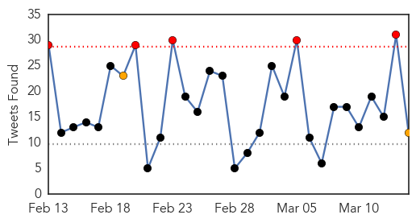

30 Day Trends
Web: 0 alerts, 0 warnings
Twitter: 5 alerts, 2 warnings
843 new deaths (10096 total)
1510 new cases (24509 total)
Top Articles:
- 1.000
- UN tally of Ebola deaths passes 10,000, most in West Africa
- 1.000
- Death Toll in West Africa's Ebola Outbreak Passes 10,000
- 1.000
- Americans Evacuated From Sierra Leone After Possible Ebola Contact
- 1.000
- Several Americans Possibly Exposed To Ebola, As Epidemic Smolders
- 1.000
- American who contracted Ebola arrives at Maryland hospital -- NationNews Barbados -- Local, Regional and International News nationnews.com
- 1.000
- More Americans May Have Been Exposed to Ebola in Sierra Leone — Naharnet
- 1.000
- Resistance to Anti-Ebola Steps Persists in Guinea, Sierra Leone
- 1.000
- Sierra Leone Health Care Workers Being Tested For Ebola In New Zealand, UK
- 1.000
- At least 10 Americans who may have come into contact with Ebola-stricken health worker in Sierra Leone flown back to US
- 1.000
- American who contracted Ebola arrives at Maryland hospital
- 1.000
- Serious condition for U.S. patient
- 1.000
- Americans Possibly Exposed to Ebola Virus Returning to U.S.
- 0.999
- US healthcare worker with Ebola in ‘serious’ condition, NIH says
- 0.999
- More US workers may be exposed to Ebola
- 0.999
- American who contracted Ebola in Africa to be treated in US
- 0.999
- Another British Healthcare Worker Infected with Ebola in Sierra Leone Flown Home
- 0.999
- Ebola: US evacuates 10 aid workers from Sierra Leone
- 0.999
- Africa's medicine men key to halting Ebola spread in Guinea
- 0.999
- First Deadly Ebola Virus Patient in Honduras Taken to Hospital
- 0.999
- U.S. healthcare worker with Ebola in 'serious' condition, NIH says
- 0.998
- UPDATE 2-At least 10 Americans being flown to U.S. after possible Ebola exposure
- 0.998
- Americans flown home after possible Ebola exposure
- 0.998
- Doctors monitor Ebola health worker
- 0.997
- Americans being flown home after possible Ebola exposure
- 0.997
- 1st LD Writethru: Ebola-infected American admitted to NIH hospital, more evaluated
- 0.997
- 1st LD Writethru: Ebola-infected American admitted to NIH hospital, more evaluated
- 0.996
- Gore nurse has nervous wait for Ebola test results
- 0.993
- Ebola scare in United Kingdom, New Zealand
- 0.991
- Four health care workers exposed to Ebola coming to Nebraska
- 0.990
- Nebraska Medicine to monitor four US health care providers exposed to Ebola
- 0.988
- Americans exposed to Ebola return for monitoring
- 0.985
- Sierra Leone Seeks Canada's Blessing As It Recovers From Ebola
- 0.985
- UK doctor under observation for Ebola
- 0.984
- U.S. health worker with Ebola admitted to NIH unit
- 0.983
- Kiwi nurse tests negative for Ebola
- 0.982
- Sierra Leone seeks Canada's bank-bid blessing
- 0.981
- Ebola care nurse tests negative for disease
- 0.981
- Ebola care nurse tests negative for disease
- 0.981
- Ebola care nurse tests negative for disease
- 0.980
- Webb, Janish among O's on mend
- 0.978
- Ebola: Health worker unlikely to be discharged from RVI before Monday
- 0.970
- Honduras: Ministry of Health dismisses any case of Ebola in the country
- 0.962
- Ebola Treatment Centre Update, Media release, 14 Mar 2015, Australian Minister for Foreign Affairs, The Hon Julie Bishop MP
- 0.960
- Kiwi health worker awaits Ebola results
- 0.959
- Encouraging efforts in restoring our ruined health sector
- 0.958
- The Ebola diary: Dr Kwan Kew Lai's harrowing journal of her time in Liberia
- 0.951
- 'Incidents of Early Marriage Happening At a Disturbing Rate'
- 0.951
- VP Expulsion Not Unprecedented
- 0.951
- Watch closely and explain frequently: Liberia's Ebola lessons
- 0.951
- Amid US-South Korea war games North Korea fires missiles
Showing top 50 articles...
Top Tweets:
- 0.761
- Four Patients Exposed To Ebola Coming to Nebraska Medicine - 1011now http://t.co/z22V0QyJQa ebola EVD
- 0.716
- First suspected case of Ebola reported in Honduras - Atlanta Journal Constitution http://t.co/tZHmqvvS3C ebola EVD
- 0.676
- Newest American Ebola Patient Represents A Biopharma Milestone - Forbes http://t.co/aPou8ff5sh ebola EVD
- 0.643
- As Ebola fades La Jollan visits Liberia - U-T San Diego http://t.co/GFVqznWOz4 ebola EVD
- 0.643
- American in Honduras checked for Ebola released from hospital - Reuters http://t.co/7GToRauDeH ebola EVD
- 0.628
- Vaccines Face Same Mistrust That Fed Ebola - New York Times http://t.co/PLqxiYCRz5 ebola EVD
- 0.627
- Four patients exposed to Ebola to be treated in Nebraska - WXIA-TV http://t.co/8wpLOwLhhj ebola EVD
- 0.623
- [TIME] Lack of Ebola Cases Shifts Vaccine Trials Away From Liberia http://t.co/TEdpDUG0sJ EBOLANEWS
- 0.584
- Americans Evacuated After Possible Ebola Contact - New York Times http://t.co/fd8SO94MFP ebola EVD
- 0.584
- Americans Evacuated After Possible Ebola Contact - New York Times http://t.co/XdaDbjJnGD ebola EVD
- 0.557
- Smart 'band-aid' could help world beat Ebola - Mashable http://t.co/Cg12JDy3hY ebola EVD
- 0.526
- RT: CDC: Americans being flown home from Sierra Leone for Ebola concerns. http://t.co/w0Sbt8gKgu
Web/News Articles

Tweets
Human Impact
Article Locations